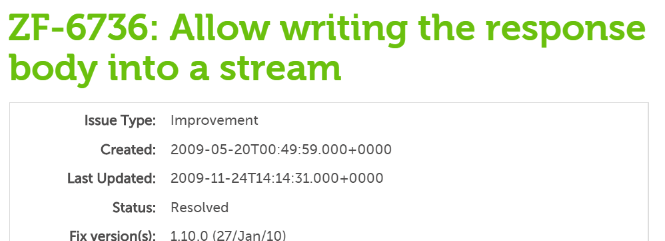
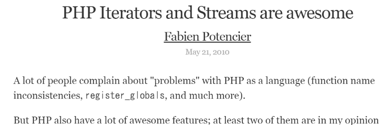
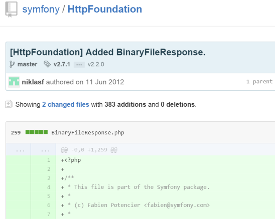
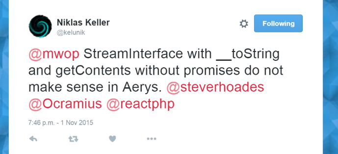

<!doctype html>
<html lang="en">

	<head>
		<meta charset="utf-8">

		<title>PSR-7 - これは何だ</title>

		<meta name="author" content="Hakim El Hattab">

		<meta name="apple-mobile-web-app-capable" content="yes" />
		<meta name="apple-mobile-web-app-status-bar-style" content="black-translucent" />

		<meta name="viewport" content="width=device-width, initial-scale=1.0, maximum-scale=1.0, user-scalable=no, minimal-ui">

		<link rel="stylesheet" href="css/reveal.css">
		<link rel="stylesheet" href="css/theme/white_s.css" id="theme">

		<!-- Code syntax highlighting -->
		<link rel="stylesheet" href="lib/css/zenburn.css">

		<!-- Printing and PDF exports -->
		<script>
			var link = document.createElement( 'link' );
			link.rel = 'stylesheet';
			link.type = 'text/css';
			link.href = window.location.search.match( /print-pdf/gi ) ? 'css/print/pdf.css' : 'css/print/paper.css';
			document.getElementsByTagName( 'head' )[0].appendChild( link );
		</script>

		<!--[if lt IE 9]>
		<script src="lib/js/html5shiv.js"></script>
		<![endif]-->
	</head>

	<body>

		<div class="reveal">

			<!-- Any section element inside of this container is displayed as a slide -->
			<div class="slides">
        <section data-markdown
            data-separator="\n---\n$"
            data-separator-vertical="\n--\n">
            <script type="text/template">
<span style="font-size:200%">PSR-7 - これは何だ</span><br>
<span style="font-size:60%; float:right;">第2回 PHP勉強会@相模原　2015/11/10<br/>sasezaki</span>
---

<span style="float:left; padding-bottom:10px;">自己紹介</span><br>
 - 大学は湘南の所でした　　　　　　　　　　

<span style="float:left; padding-bottom:10px;">過去のよそでの主な <strike>発表</strike> 主張</span>
 - スクレイピングについて (2008年 / PHP関西勉強会)
 - PHPライブラリの歩き方・作り方　(2011年 / PHPカンファレンス)
 - Symfonyユーザ向け psr-7 zend-diactoros Middleware入門 (2015年 / Symfony Meetup)
---

### 今日の概要

 - 先月のZendConでのトーク「PSR-7 And Middleware The Future Of PHP」のスライドをざっくり斜め読みと思ったけど、あんまり説明良くなかったので2014年12月のスライド「PHP Speaks HTTP?」を。

 - PSR-7に対するちゃちゃ入れ
 - streamでのコードデモ


---

私の主張は３月に書いたものと変わりないです。

 - PHP - 憂鬱な希望としての PSR-7 http://sasezaki.hatenablog.com/entry/2015/03/07/195908

---

 ⇒<a href="http://slides.mwop.net/2014-12-06-PHP_Speaks_Http/">「PHP Speaks HTTP?」</a><br>
 ⇒<a href="http://weierophinney.github.io/2015-10-20-PSR-7-and-Middleware/">「PSR-7 And Middleware The Future Of PHP」</a>

---


---

<span style="font-size:130%">PSR-7 のポイント</span>
--

 - psr/http-message のインターフェイスのDocCommentが丁寧
 - リクエストターゲット用のURI
 - `UploadedFileInterface` によるアップロードファイル配列の正規化
 - イミュータブル
 - メッセージボディがストリーム

--
特に個人的にはメッセージボディがストリームな点
--

「なぜ？」
--

だって、今までのフレームワークってストリームのことは後回しだったんだよ！
--

Zend Framework 1 <br>

--


--

ZF 1.10 introduces <br><br>
`Zend_Http_Response_Stream`
--


--


--

つまり
--

今までフレームワーク側であとづけで用意されたレイヤーから、
<strong style="font-size:150%">もとからPHPに備わっていた抽象化レイヤー</strong>に立ち戻ったことになる
---


--

HTTPクライアント

```php
$html = file_get_contents('http://example.com/');
```
--

```php
$stream = fopen('http://example.com/', 'r');
$html = stream_get_contents($stream);
```
--

```php
$stream = fopen('http://example.com/', 'r');
stream_copy_to_stream($stream, fopen('php://temp', 'wb'));
```
--

HTTPレスポンス

```php
$stream = fopen('php://memory', 'rb+');
fwrite($stream, 'Hello World!');
stream_copy_to_stream($stream, fopen('php://output', 'wb'));
```
--

```php
$stream = fopen('php://memory', 'rb+');
fwrite($stream, 'Hello World!');
echo stream_get_contents($stream);
```
--

Viewが絡むと

```
//hello.html
Hello World!
```

```php
ob_start();
include 'hello.html'
$template_message = ob_get_clean();

echo $template_message;
```
--

OK?
---

・・・
--

付け加えると、フィルターについて考えてみると
--

Symfony&rsquo;s way
--

<strong style="font-size:180%">
Bundle ?<br>
EventDispatcher ?
FilterResponseEvent ?
DependencyInjection ?
</span>
--

PHP&rsquo;s way
--

```
stream_filter_append($stream, "string.toupper");
```
--

・・・まあ、使いどころあんまりないですけど<br>(この例だと)
---

## おさらい

- PSR-7そのものは技術的には、 PHP 4.3 / PHP 5.0 でやろうと思えばできたもの。
(だってインターフェイスなだけだもん。)
- あなたのコードがどのコードベースだろうと、PSR-7で解決しようとしている点を気を付けよう。


---

ちなみに

--

ストリームを強制してることで、SymfonyのStreamdResponseでやってるような<br>即echoな手法がちょっとやりづらい。<br>
(数百MBのCSVとか)
<br><br>
＜psr-7 否決1票の理由の一つ＞

--

こうすれば良いんじゃね？というのは、以下に<br>
https://gistlog.co/sasezaki/fb703148b0542d61f0bb

---

コードデモ

 - <a href="https://github.com/struggle-for-php/SfpIteratorUrl/blob/4d0540e50343e6b1f35b586241d46ac04b235bab/sample/sample.php">Iterator用のStreamWrapper利用</a>
 - <a href="https://github.com/struggle-for-php/SfpIteratorUrl/blob/4d0540e50343e6b1f35b586241d46ac04b235bab/sample/sample_generator.php">↑を踏まえたGenerator使用</a>

---

夏休みの友

 - PHP 7のReturn Type Hintingはすぐそこまで来ているけど？
 - WebSocketにも適切なインターフェイスだろうか？
 - HTTP/2にこれらのインターフェイス名は適切だろうか？
 - ...

---



---


---

http://psr7.net/ref.html


            </script>
        </sectin>

			</div>

		</div>

		<script src="lib/js/head.min.js"></script>
		<script src="js/reveal.js"></script>

		<script>

			// Full list of configuration options available at:
			// https://github.com/hakimel/reveal.js#configuration
			Reveal.initialize({
				controls: true,
				progress: true,
				history: true,
				center: true,

				transition: 'slide', // none/fade/slide/convex/concave/zoom

				// Optional reveal.js plugins
				dependencies: [
					{ src: 'lib/js/classList.js', condition: function() { return !document.body.classList; } },
					{ src: 'plugin/markdown/marked.js', condition: function() { return !!document.querySelector( '[data-markdown]' ); } },
					{ src: 'plugin/markdown/markdown.js', condition: function() { return !!document.querySelector( '[data-markdown]' ); } },
					{ src: 'plugin/highlight/highlight.js', async: true, condition: function() { return !!document.querySelector( 'pre code' ); }, callback: function() { hljs.initHighlightingOnLoad(); } },
					{ src: 'plugin/zoom-js/zoom.js', async: true },
					{ src: 'plugin/notes/notes.js', async: true }
				]
			});

		</script>

	</body>
</html>
